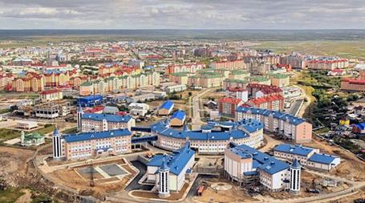

Najnižu inflaciju u septembru ove godine imala je Francuska (6,2 posto), potom Malta (7,4) i Finska (8,4). Najviša je bila u Estoniji (24,1 posto), Litvaniji (22,5), i Letoniji (22) (ilustracija, Evrostat: Septembarska godišnja inflacija do 10,9% u EU, 9,9% u evrozoni)
ML